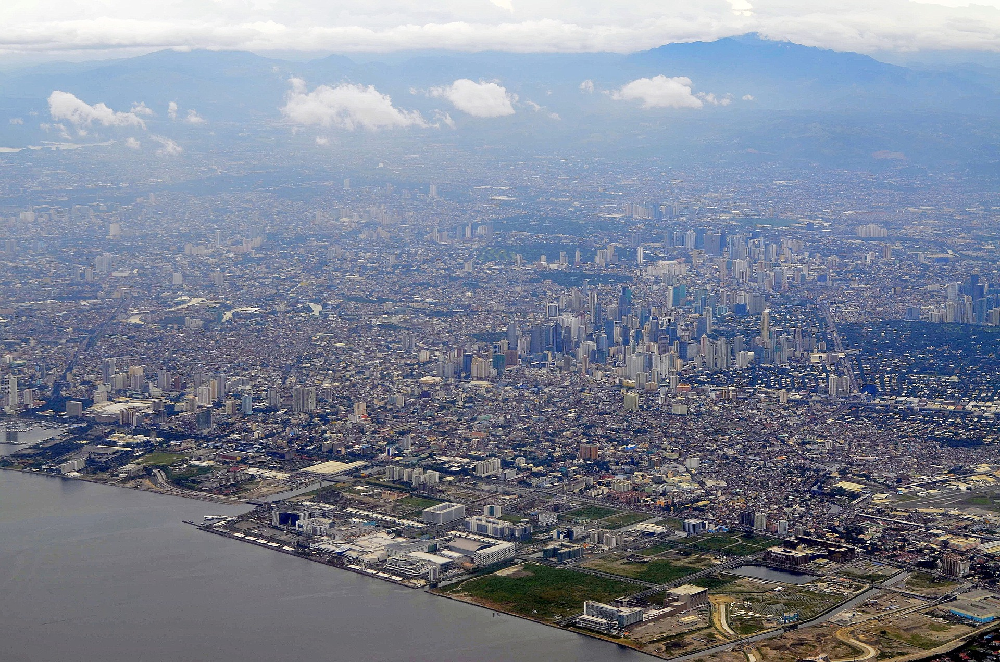

Luzon is the largest and most populous island in the Philippines. It's located in the northern part of the archipelago and is home to the country's capital, Manila, as well as Quezon City, the most populous city. Luzon is known for its beautiful beaches, stunning mountains, and rich cultural heritage.